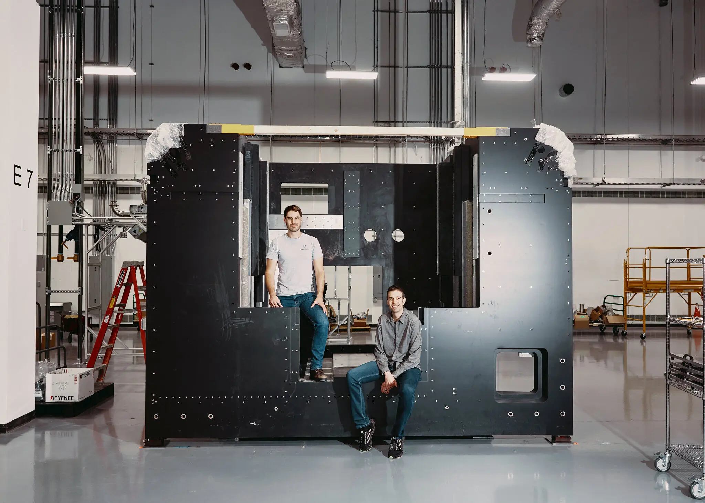
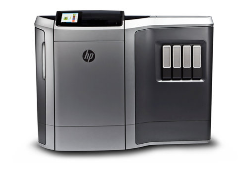

ICON's 3D Printed houses
Last year, in a widely publicized collaboration with the San Francisco-based housing nonprofit New Story, ICON introduced a 350-square-foot house in East Austin that has a conventional flat roof with standard framing lumber. The structure was printed with a machine called Vulcan I using a proprietary concrete-like material called Lavacrete. Construction took a total of 47 hours over several days and cost $10,000 for the printed elements.
Read moreVulcanForms' Mega Machines
The machines stand 20 feet high, weigh 60,000 pounds and represent the technological frontier of 3-D printing. Each machine deploys 150 laser beams, projected from a gantry and moving quickly back and forth, making high-tech parts for corporate customers in fields including aerospace, semiconductors, defense and medical implants. The parts of titanium and other materials are created layer by layer, each about as thin as a human hair, up to 20,000 layers, depending on a part’s design. The machines are hermetically sealed. Inside, the atmosphere is mainly argon, among the least reactive of gases, reducing the chance of impurities that cause defects in a part.
Efficiency and Growth. Right Now.
“We have proven the technology works,” said John Hart, a co-founder of VulcanForms and a professor of mechanical engineering at M.I.T. “What we have to show now is strong financials as a company and that we can manage growth.”Read more
HP Unveils Plan to Make 3-D Printing an Everyday Thing
Hewlett-Packard believes it has developed impressive new technology to make it easier and faster to print three-dimensional objects. Let’s hope the grandiose way HP talks about it doesn’t get too much in the way.
HP says it has developed a 3-D printer that is 10 times faster than most of today’s 3-D printers, while remaining highly precise. The product is expected to be in testing and early production next year, and generally available in 2016. While not disclosing the expected price, HP also said it would be cheaper than what is now on the market.